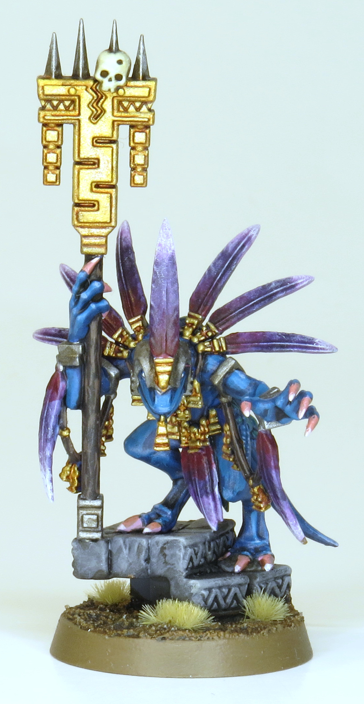
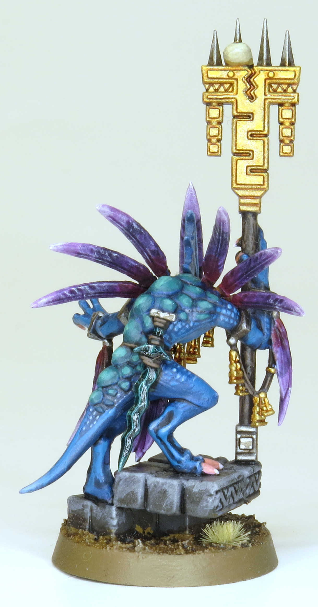
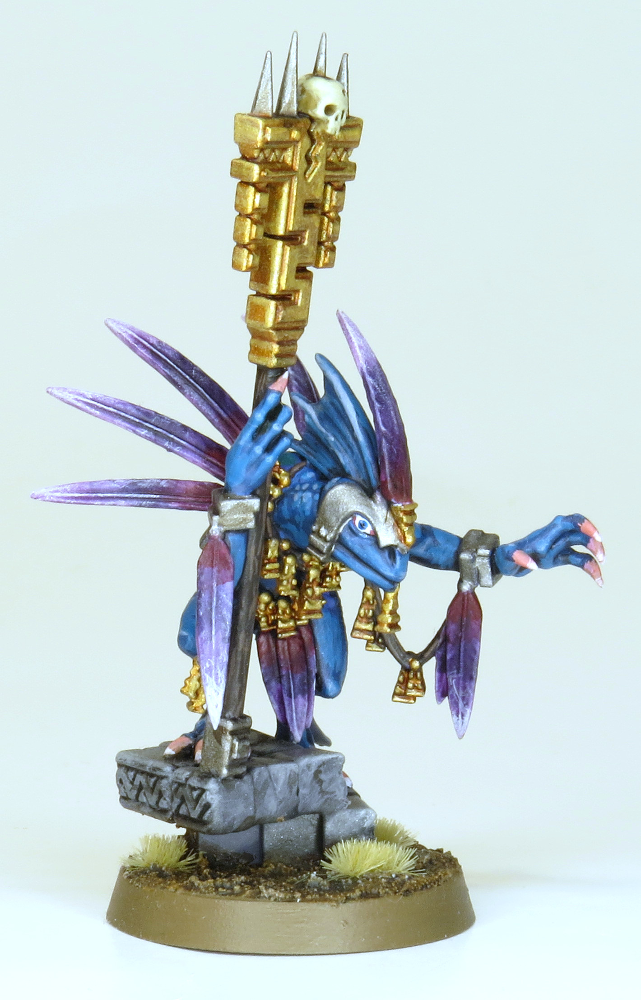
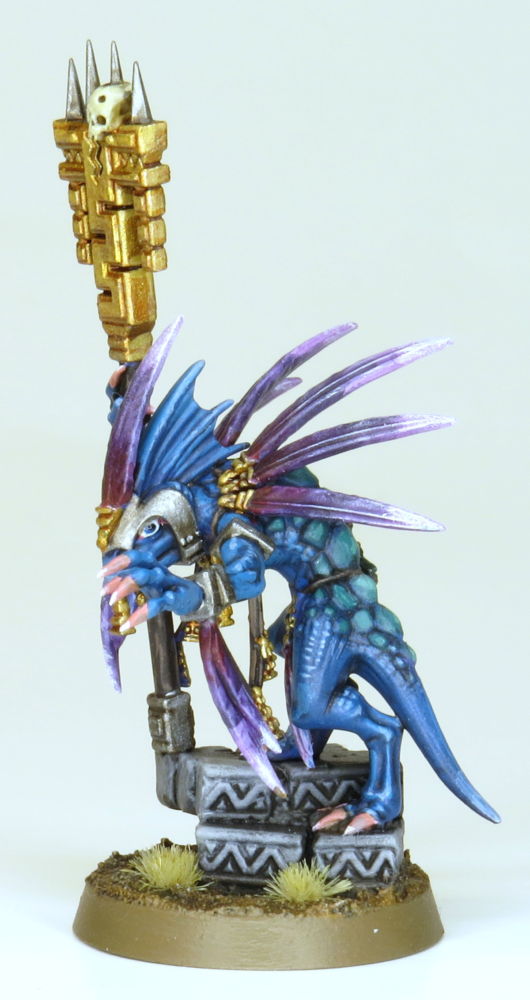

Really fun little guy, got to try a lot of new stuff painting him. Probably most proud of his jade sword, but the gloss prevents it from showing up well with my poor camera skills.




Paints Used:
Skin: Thousand Sons Blue, Nuln Oil all over, highlight Ahriman Blue and Fenrisian Grey
Scales: Thousand Sons Blue, Nuln Oil all over, highlight Kabalite Green and Sybarite Green
Gold: Retributor Armour, Reikland Fleshshade all over, highlight Liberator Gold and small parts of Auric Armour Gold
Steel: Leadbelcher, Agrax Earthshade all over, highlight Stormhost Silver
Wood: Dryad Bark, Agrax Earthshade, highlight Gorthor Brown
Bone: Zandri Dust, Seraphim Sepia all over, highlight Ushabti Bone and Screaming Skull
Feathers: Vallejo White, mix of Khorne Red and Thousand Sons Blue heavily glazed bottom 2/3rds, glaze Khorne Red at base, Druchii Violet all over twice, glaze Khorne Red at base again, drybrush tips Vallejo White
Base stone: Mechanicus Standard Grey, Agrax Earthshade all over, drybrush Dawnstone and Administratum Grey
Jade Blade: Waaagh Flesh, Nuln Oil all over twice, highlight and draw cracks with Kabalite Green and Sybarite Green, Ardcoat
Base: Vallejo Brown Earth Texture, Agrax Earthshade all over, drybrush Screaming Skull, Gamers Grass TinyTufts Beige, Steel Legion Drab rim